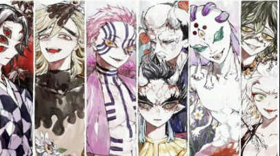

Le tout premier démon arrivé sur Terre est Kibutsuji Muzan, il est apparu il y a plus de 10000 ans! Il est leurs chef et le seul à pouvoir changer des humains en démon, c'est donc lui qui a attaqué la maison de Tanjiro et changé Nezuko en une de ces créature. Le points faibles des Démons sont la lumière du soleil, qui les fais bruler et les réduits en cendre ;les fleurs de Glycine qu'ils évitent consciemment et dont ils détestent l'odeur. Un poison à base de cette plante est souvent utilisé afin de paralyser les démons. Les démons sont immortel et leurs membres repoussent lorsqu'ils sont coupés. Le seul moyen de les tuer est donc d'avoir un sabre du soleil et de leurs trancher la tête avec celui-ci.
Les douze lune démoniaques sont les douze démons les plus puissants. Ils sont séparés endeux groupes: les lunes inférieurs, au nombre de six, les plus faibles de Lunes et les lunes supérieurs, ausssi au nombre de six, les plus puissant. La première Lune étant la plus forte et la sixième la plus faible. Ont peut reconnaitre une Lune par le fait que leurs rang est gravés dans leur oeil. Les Rangs Inférieurs ont leurs numéros et rangs gravés dans un seul œil, tandis que les Rangs Supérieurs ont leurs numéros dans un œil et les kanji (charactères japonnais) pour « Rang Supérieur » dans l'autre.

les six Lunes supérieurs
les six Lunes inférieures
retour a la page principale